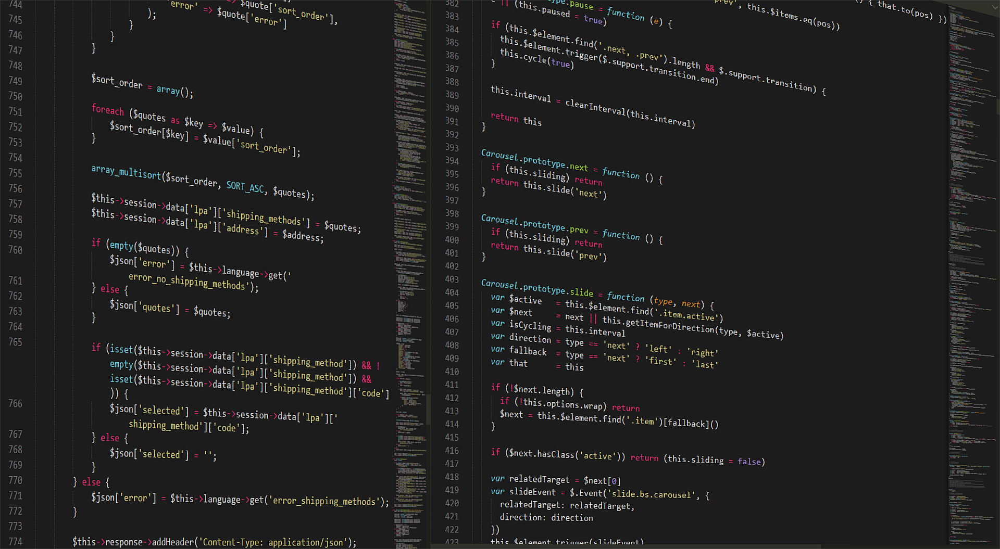

L'intelligence artificielle en 2026
Publié le
L'intelligence artificielle occupe une place grandissante dans notre société. Elle transforme de nombreux secteurs comme la santé, l'éducation et l'industrie.
Découvrez un espace consacré à l'information, à la culture numérique et aux nouvelles technologies. Notre objectif est de proposer un contenu accessible et innovant pour tous les passionnés du numérique.
Nous proposons des articles, des interviews et
des podcasts consacrés au monde du digital.
Notre équipe utilise les technologies
HTML
pour structurer ses publications.
Explorez nos différentes rubriques et restez
informés des dernières tendances.
Publié le
L'intelligence artificielle occupe une place grandissante dans notre société. Elle transforme de nombreux secteurs comme la santé, l'éducation et l'industrie.
Publié le

Le développement web évolue constamment. Les développeurs utilisent de nouveaux outils et frameworks pour concevoir des sites toujours plus performants.
Publié le
La cybersécurité est devenue indispensable face à l'augmentation des cyberattaques. La protection des données est désormais une priorité pour les entreprises.
Publié le
Les outils numériques permettent de développer de nouvelles méthodes d'apprentissage. Les plateformes éducatives rendent les connaissances plus accessibles.